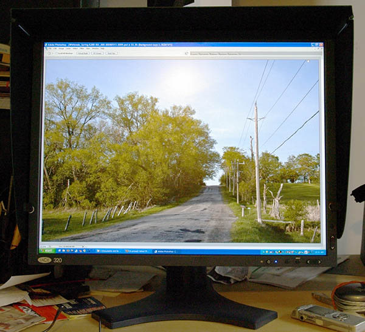
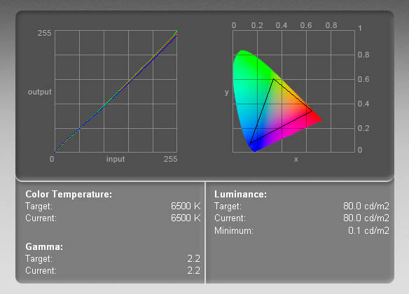
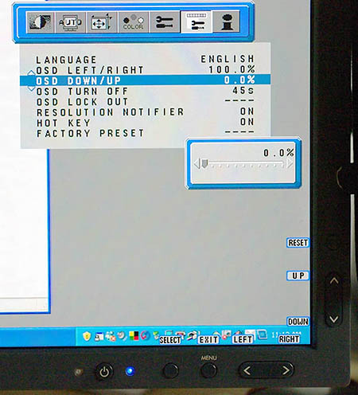
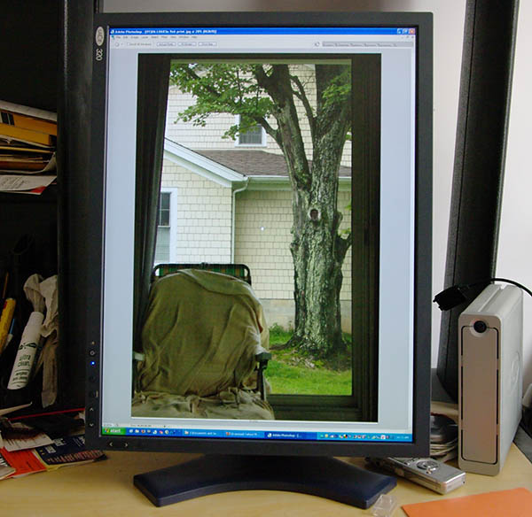

|
LaCie 320 LCD monitor user reportVersion 1.0, © 2008 by Dale Cotton, all rights reserved This is not a monitor review simply because I'm not qualified to write one. I have spent countless hours in front of maybe a dozen displays; but the 320 is the only truly high-end LCD monitor I've worked with. BackgroundAlmost three years ago I needed a new monitor, knew that CRT production had ceased, and so purchased one of the few remaining photo-editing-grade CRTs still available, a LaCie Electron Blue. This served me well for about a year, then developed a fault in the vertical hold circuit such that the image collapsed into a single intense horizontal stripe across the middle of the screen for the first 15 or 20 minutes after being turned on. The good news was that LaCie provides a 3 year warranty. The bad: they don't provide a loaner, so I'd have had to live without a monitor for as long as the repair took. I opted to live with the problem and limped along like that until three weeks ago, at which time the vertical hold gave out entirely. Being addicted to photography, not to mention the Internet, I really did not want to live without a home computer for some unknown period of time, so I reluctantly went shopping for a new monitor. According to forum experts my best bet would have been a high-end NEC, but these are not available here in Toronto. Eizo is also highly regarded but is considered pricier, so that became my next target. Unfortunately, I couldn't find the mix of specs I was looking for in an Eizo, which left me with essentially one choice – the one I had already rejected – namely, LaCie. Years ago, the name LaCie had considerable cachet. They specialized in Mac-friendly products and anything Mac-friendly had to be special. We now know that LaCie assembles components manufactured by other firms instead of doing their own manufacturing. And, of course, my experience with my Electron Blue didn't endear the name LaCie to me either. On the plus side, rumour had it that the high-end LaCies contained NEC LCD panels. Not having anywhere else to turn, I made sure I could return it for a full refund, then sprang for a $1000 LaCie 320. Enter the 320 Fig. 1. LaCie 320 – diamond in the rough Of course, my overriding concern was to get a monitor that could be profiled, and supposedly the LaCie was high-end enough for that to be the case. Some of the other specs I was concerned about were having at least the 1200x1600 resolution I was used to from the Electron Blue, having 12-bit colour, and having a small dot-pitch. So, in fact, if I could have got a 1200x1600 pixel monitor with, say, an 18" diagonal, I would have preferred that to a 1200x1600 with a 24" diagonal. Why? When editing an image, my overriding concern is to make a good print. A good photographic print generally has at least 200 pixels per inch (ppi) for framing and preferably 300 or more for hand-viewing. Yet a typical monitor has 70 to 100 ppi, meaning the image on-screen is dramatically coarser than it will be on paper, making it hard to judge sharpness. The 320 is 1200x1600 pixels with a 20" diagonal and 0.255mm dot pitch. 0.255 is better than the 0.27mm dot pitch of some other monitors, but not up to the 0.24mm dot pitch of the Electron Blue. Another relevant spec is gamut size. The bigger the gamut the more highly saturated hues a device is capable of displaying. The 320 is not especially wide gamut; but I decided, given my budget, that this was not as important a criterion for me as the other factors I've just listed. Today's pigment inkjets do not have an especially wide gamut and my pictures do not tend to push their limits (in spite of a certain weakness for fall colour landscapes). Unpacking and installing the 320 was painless except for one minor hitch. It ships with two CDs – one for the free copy of the wonderful Pivot utility, one for the drivers – LaCie again thumbed its corporate nose my way by including a nicely-labeled driver CD that actually contained a second copy of the Pivot CD. Image quality basicsOnce I got the 320 connected (with the default Windows driver) and Photoshop up it was hard to overlook the greater pop and sense of clarity I was seeing after years of CRT use. But it was also hard to overlook the graininess, or pixelization, the comes from having a photograph presented by 2 million tiny-perfect, totally precise squares of colour. Not sure this was something I could get used to. Nevertheless, as a die-hard photo editor my immediate concern was to get the darned thing profiled; and I'd read enough tales of horror on-line (not to mention my own experience with a mid-range Viewsonic LCD at work) to be far from certain of success. Still: nothing for it but to fire up my trusty EyeOne Display 2 and go to work. One thing I've read repeatedly is that trying to profile at anything less than the native brightness setting of the monitor is to ask for trouble, but only one way to find out. I opted for the 110 candela recommenation for LCDs and got to work. 15 minutes later I had a flawless profile; only problem was that 110 candelas is still 'way too bright for my dimly-lit computer room. 100 cd proved still too bright; down to 80 I ventured with a what-the-heck attitude. And, amazingly: no problemo! Fig. 2 shows the resulting profile:  Fig. 2. 320 profiling results at 80 cd/m² – as you can see, the correction curve on the left is tight and nearly linear. Back in Photoshop a bit of testing verified that the 80 cd/m² profile provided the same degree of screen-to-print correspondence I had enjoyed with the CRT. The colourful bit on the right side of Fig. 2 shows the total visible spectrum in a wing-shaped swatch with the portion displayable by the 320 inside the black triangle – which is pretty much a match for the sRGB colour space. The portion of the spectrum inside the triangle increases in saturation from centre to the black outline, but outside the triangle the saturation stays the same, since the 320 (like the vast majority of monitors) is unable to handle those intensities. Notice that nearly all the yellow and orange colours are inside the triangle. I've already collided with the fact that the 320 can display considerably brighter yellow and orange than my Epson inkjet can print. So if the 320 is not a wide gamut display, it is already wider than my printer in at least one part of the spectrum. More goodiesProfiling involves mucking about with the monitor's OCD (on-screen display). The 320's OCD is wonderfully easy to use, having both up/down rockers and left/right rockers for navigation:  Fig 3. 320 OCD controls The Pivot utility combined with the 320's excellent stand allows one to use it in portrait or landscape orientation, switching by simply physically rotating the monitor then pressing a hot key to re-draw the screen. Score one for LCD over CRT.  Fig. 4. 320 in portrait orientation Exploring the OCD menu, I noticed an innocuous-looking setting labeled Sharpness. This essentially allows one to blur/de-focus the display be decreasing sharpness or crispen the display by increasing sharpness. Minimum sharpness resembles what I see with my glasses off and three too many beers down the hatch. Maximum sharpness resembles unsharp masking cranked up to the point of grotesque haloing occurring. After some experimentation I've set sharpness to 9.5% – a slight blurring – to eliminate much of the inherent pixelization and give me the same smoothness I've grown used to after using CRTs for so long. Bottom lineIf a straw can break a camel's back, having control over sharpness was the straw the pushed the 320 clearly over the border and into better-than-CRT territory.
My ideal monitor would have a 0.1mm dot pitch and twice the pixel count of the 320. Maybe one of my grandchildren will use such a device. Other than that, and assuming no electrical/mechanical failure à la the Electron Blue, I don't see myself looking for a better monitor for a lot of years to come.
|